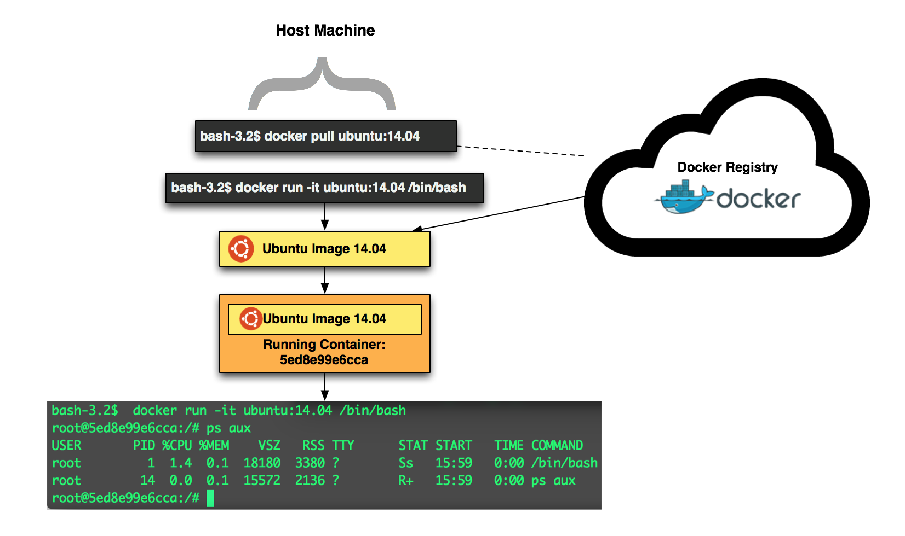
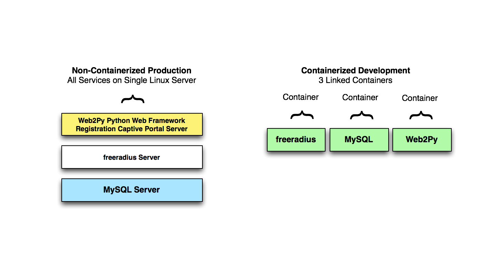

class: center, middle, inverse <p> </p> # Getting Started with Docker .pinkify[(aka Container Virtualization)] Walter Meyer SUNY Purchase --- # What is Container Virtualization? .center[<p> </p>] --- # What is Container Virtualization? .center[<p> </p>] --- # What is Docker? - Docker is an implementation of container virtualization (aka Operating System Virtualization). - Or, what is also known as a container runtime. - It is a suite of server and client tools. - It uses/leverages built-in Linux kernel (3.10+) features. - Namely, namespaces and cgroups (more on those later). - And Union Filesystems (amongst other things). .center[<p> </p>] --- # What is Docker? - Docker Daemon - application that runs on the container host machine. - Docker Client - controls the Docker daemon. - Docker Registry - Public cloud repository where we can download (and upload) images to run on our host machine. Ubuntu, CentOS, etc. .center[<p> </p>] --- # Simple Docker workflow - Start up an Ubuntu container and go to a bash shell. .center[<p>  </p>] --- # Starting an Ubuntu Container See what images we have: ```shell bash-3.2$ docker images REPOSITORY TAG IMAGE ID CREATED VIRTUAL SIZE ubuntu latest 07f8e8c5e660 2 weeks ago 188.3 MB hello-world latest 91c95931e552 4 weeks ago 910 B ``` Start an Ubuntu container in interactive mode with a pseudo-TTY: ```shell bash-3.2$ docker run -it ubuntu bash ``` Look ma, no extra processes! ```shell bash-3.2$ docker run -it ubuntu bash root@a8aa13345028:/# ps aux USER PID %CPU %MEM VSZ RSS TTY STAT START TIME COMMAND root 1 0.0 0.1 18180 3084 ? Ss 01:05 0:00 bash root 14 0.0 0.1 15572 2096 ? R+ 01:30 0:00 ps aux ``` See what containers are running: ```shell bash-3.2$ docker ps CONTAINER ID IMAGE COMMAND CREATED STATUS PORTS NAMES 535b105d1ee2 ubuntu:latest "bash" 25 seconds ago Up 23 seconds hopeful_carson ``` --- # What's the difference? - How long does it take to start and stop a traditional VM? - *Generally, about 20-45 seconds.* - How long does it take to start and stop a container? - *Milliseconds!* - It's not magic sauce, just a different approach. i.e. We don't need to wait for a complete OS to boot with containers. - *Let's try it!* --- # The Docker Client and Daemon - The Docker Daemon can be controlled locally or remotely via the client. - Remote control can be done securely over TLS using client/server certs. .center[<p> </p>] --- # My Docker Development Environment - Boot2Docker--just a *very* minimal Linux Distro VM running on my machine. (http://boot2docker.io/) - Docker Client installed on my machine communicates with Docker Daemon in VM over TLS. .center[<p> </p>] --- # A Docker "container" vs. an "image" - Images are bases, or templates, from which we instantiate containers. - So, to do something useful this time. Let's start with a CentOS image and actually install something! .center[<p> </p>] --- # The container metaphor... - How do we get all of our *stuff* in real life from overseas? - *Containers!* - It gets packed into a shipping container and put on a big boat, then a train, a truck etc.! .center[<p> <img src="img/ship.png" height="275"> </p>] --- # The container metaphor... - So, we extend and adopt these notions of modularity, standardization, and ease of transport that are inherent to shipping containers, and apply them to the way we that we deploy our applications. .center[<p> </p>] --- # Why would I want to use a container? - Docker and container virtualization are really about applications. - Application deployment can be as varied as the products we get via shipping containers. - Let's say you have a Ruby on Rails, Java, or Node.js Web application... - That application requires X version of Java or some strange Ruby Gem. That Gem requires yet another strange library on the OS. - Oh, and the developer says it only works (has been tested anyway) to work on Ubuntu 14.04 but you run CentOS 7! .center[<p> </p>] --- # How does Docker help solve these complications? - With Docker, all of this is no problem! - We can "container-ize" our applications and all of their dependencies easily with Docker. - So, we "ship" our application in a Docker Container format, ready to rock. No complex installation guide necessary. .center[<p> </p>] --- class: inverse, footnote # What's the big idea? Applications! .pinkify["Docker is an open platform for developers and sysadmins to build, ship, and run distributed applications.] .pinkify[IT can ship faster and run the same app, unchanged, on laptops, data center VMs, and any cloud."] .gray[Source: .gray[https://www.docker.com/whatisdocker/]] .white[ - Docker and container virtualization are about more than just saving compute resources! - Scaling and reliability. - Application isolation, testing, and development. - Application packaging, distribution, and deployment. ] --- # What is the Docker container format? - The Dockerfile specifies how to build a container. - Akin to a recipe. We create an image based on our Dockerfile instructions. - Each instruction is a "layer" (I'll explain). ```dockerfile # Use CentOS 7 as our base image FROM centos:7 # Install Apache web server RUN yum install httpd -y # Open up port 80 for web traffic EXPOSE 80 # The command to run when our container starts ENTRYPOINT /usr/sbin/httpd -D FOREGROUND ``` --- # With our Dockerfile, we can build an image. ```shell bash-3.2$ docker build -t waltermeyer/apache . Sending build context to Docker daemon 2.048 kB Sending build context to Docker daemon Step 0 : FROM centos:7 ---> fd44297e2ddb Step 1 : RUN yum install httpd -y ---> Using cache ---> 2e6af43fe071 Step 2 : EXPOSE 80 ---> Using cache ---> fca89aeeb929 Step 3 : ENTRYPOINT /usr/sbin/httpd -D FOREGROUND ---> Using cache ---> 311ab666eb60 Successfully built 311ab666eb60 ``` --- # Docker Layers and the Filesystem - Each one of our instructions in a Dockerfile creates a layer. - These layers eventually coalesce to form our final image. - This layering concept is what allows us to start with a base image (Ubuntu, CentOS) and layer our customizations on top of it without duplicating the underlying base image (which presumabley would be common to other containers on a system). .center[<p> </p>] --- # Under the Linux Container Hood - If you've heard of chroot jails, containers are in many ways a more advanced extension of this paradigm. - namespaces and cgroups are features of the Linux kernel that are used by Docker to give us Container Virtualization. --- # Under the Linux Container Hood - Namespaces are essentially abstractions that create process-based isolation of system resources. A PID in a given namespace *thinks* it is by itself with respect to other PIDs, network resources, mount points, etc. - cgroups (aka control groups) control and limit access to system resources like CPU, I/O, Memory, Network, etc. - Together these features allow us to realize virtualized systems at the Kernel level. - All of our containers leverage and share the Kernel of our host OS. - TL;DR cgroups control what the process(es) our container can use in terms of compute resources and namespaces control what they can "see". (https://docs.docker.com/articles/security/) --- # Docker Layers and the Filesystem - Part of the "magic sauce" of Docker is that of the filesystem principles it leverages. - Specifically, Docker relies on what is called a Union Filesystems. - "Union file systems allow files and directories of separate file systems, known as branches, to be transparently overlaid, forming a single coherent file system." (https://docs.docker.com/introduction/understanding-docker/) - Supported are: AUFS, BTRFS, devicemapper, vfs, overlayfs (Source: RedHat) .center[<p> <img src="img/layers2.png" width="300"> </p>] Image Source: https://docs.docker.com/terms/filesystem/ --- # What the *#!$ is a Union Filesystem? - To review, a Linux System is typically comprised of a bootfs and a rootfs. - The bootfs is where the boot loader and kernel lives. - The rootfs contains most of the distribution specific qualities that make a particular Linux distro unique. .center[<p> </p>] Image Source: https://docs.docker.com/terms/filesystem/ --- # What the *#!$ is a Union Filesystem? - This is how with Docker we can run multiple Linux distributions all on the same Kernel. - When we run a container, the uppermost layer is the actual container, and read/writeable. - The layers the reside "underneath" that container are what comprise our "image". .center[<p> </p>] Image Source: https://docs.docker.com/terms/filesystem/ --- # Other Docker Tools - Docker Compose - Control multiple complex containers using YAML formatted files. - Docker Swarm - Clustering for Docker. - Docker Machine - Bootstrap machines as Docker hosts. --- # Where are containers being used today? ####"Everything at Google runs in a container" ####\- Joe Beda, Senior Staff Software Engineer at Google - Google, Ebay, Spotify, Yelp, and more. (https://www.docker.com/resources/usecases/) - Google Engineers were the initial creators and contributors of cgroups to Linux Kernel. (https://www.kernel.org/doc/Documentation/cgroups/cgroups.txt) --- # What platforms support containers and Docker today? - "Container-Focused" Linux Distros: CoreOS, Project Atomic, Dokku, Boot2Docker. - Cloud Providers: Amazon AWS, Microsoft Azure, Google, DigitalOcean, DotCloud, Tutum, etc. - Docker client for Microsoft Windows available (MS and Docker have partnered)! --- # What is Purchase doing with Docker? - Not that much, yet! - But two things worth talking about! - Started using it as a part of development workflow for Python web-application for ResNet network registration. - Running Gitlab using Docker and Docker Compose. --- # Containerized GitLab - GitLab is basically a GUI web front end for managing and collaborating with Git repositories. - Basically, similar to GitHub but self-hosted and Open Source. - Allows for code colaboration, wikis, source code control, etc. - In addition to the web app itself, GitLab needs: Postgresql and Redis. .center[<p> <img src="img/gitlab.png" width="375"> </p>] --- # Containerized GitLab - Running with Docker works great. But remember those Docker 'docker run' commands? - They can get pretty hairy when you want to do complex things with multiple containers. - For example, to run Gitlab, we would have to do: ```shell bash-3.2$ docker run -d --name=postgresql -v /opt/postgresql/data:/var/lib/postgresql \ -e DB_USER=gitlab -e DB_PASS=secret123 -e DB_NAME=gitlabhq_production sameersbn/postgresql:latest bash-3.2$ docker run -d --name=redis sameersbn/redis:latest bash-3.2$ docker run -d --name=gitlab -v /opt/gitlab/data:/home/git/data \ -e GITLAB_PORT=443 -e GITLAB_HOST=git.purchase.edu -e GITLAB_SSH_PORT=22 -e GITLAB_HTTPS=true \ -p 10.0.0.55:22:22 -p 10.0.0.55:22:22 ``` - That's a bit hard on the eyes and brain. - Docker Compose to the rescue! --- # Containerized GitLab - This is a Docker Compose file. - With a single YAML formatted file and Docker Compose ```yaml postgresql: image: sameersbn/postgresql:latest volumes: - /opt/postgresql/data:/var/lib/postgresql environment: - DB_USER=gitlab - DB_PASS=secret123 - DB_NAME=gitlabhq_production redis: image: sameersbn/redis:latest gitlab: image: sameersbn/gitlab:7.8.4 links: - redis:redisio - postgresql:postgresql ports: - "10.0.0.55:443:443" - "10.0.0.55:22:22" volumes: - /opt/gitlab/data:/home/git/data environment: - GITLAB_HOST=git.purchase.edu - GITLAB_SSH_PORT=22 - GITLAB_PORT=443 - GITLAB_HTTPS=true # ... TRUNCATED... ``` --- # Containerized Web Application .center[<p> </p>] --- # Containerized Web Application .center[<p>  </p>] --- # Containerized Web Application - Again, we use Docker Compose to manage our Docker containers. ```shell # MySQL Container mysql: image: mysql:latest environment: - MYSQL_ROOT_PASSWORD=Cent4aur - MYSQL_DATABASE=radius - MYSQL_USER=radius - MYSQL_PASSWORD=Sup3rS3rial # freeradius Container freeradius: command: "-X" image: waltermeyer/freeradius:latest links: - mysql:mysql ports: - "1812:1812" - "1813:1813" volumes: - /Users/walt/Git/freeradius-configs/:/etc/raddb # web2py Container web2py: image: waltermeyer/web2py:latest links: - freeradius:freeradius - mysql:mysql ports: - "8000:8000" volumes: - /Users/walt/Git/reggy/:/web2py/applications/reggy ``` --- # The (growing) Container Virtualization "Ecosystem" of Applications... .center[<p> </p>] --- # What are the use cases for the Enterprise and Education? - Use it as a component of a PaaS (Platform as a Service). - *Faculty and Student development could benefit from having a reusuable, disposable, and lightwieght container-based platform.* - Streamline your development and deployment processes. - *Being able to quickly create, test, and destroy the environments your applications run on regardless of platform is invaluable to improving development.* - Application/security testing. - Running an application in an isolated container allows you to see what it's doing before deploying it elsewhere. Then you can do a: ```shell bash-3.2$ docker diff container_id ``` --- class: inverse, footnote # You can try it on your laptop, right now! For CLI ♥ ers (OS X or Windows): http://boot2docker.io <p> <img src="img/Boot2Docker.png" width="100"> </p> For GUI ♥ ers (OS X only): http://kitematic.com <p> <img src="img/kite.png" width="100"> </p> .pinkify[P.S. I won't be offended if you ignore me and play with Docker now...] --- # What's the catch? - Docker itself is a relatively new piece of software (2013). - Container virtualization itself is actually pretty old (cgroups and namespaces developed between 2006-2008). - Can I use Docker in production? It depends, but probably, depending on what you want to do and how much time you can invest in learning/testing/vetting it in your environment. - Docker security is still evolving. (https://blog.docker.com/2015/05/docker-security-tools/) - The "ecosystem" of tools that orchestrate and leverage Docker are rapidly developing and changing, as is Docker. --- # The future... - IMHO, containers, in one form or another are going to become increasingly prominent for running and deploying isolated, distributed, and highly available applications on Linux. - The container runtimes themselves, Docker, Rocket, etc. will likely change and face stiff, albeit healthy, competition from one another and elsewhere, as container technology, and the principles it brings with it, continue to advance and gain traction in the Enterprise. --- class: inverse, footnote # Questions / Comments / Tomatoes .pinkify[Email: walter.meyer@purchase.edu] .pinkify[Slides: https://waltermeyer.github.io/stc2015] Try It: http://boot2docker.io <p> <img src="img/Boot2Docker.png" width="100"> </p> OR http://kitematic.com <p> <img src="img/kite.png" width="100"> </p>